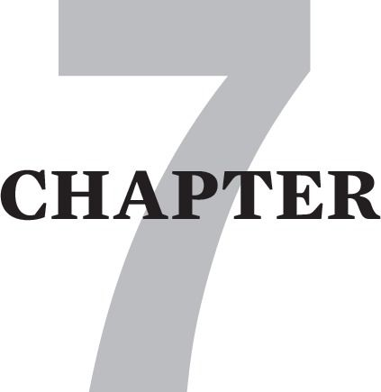

fawn spectrum, you may find this chapter relevant even if the fawn response is not your primary position. Moreover the first section below contains important information about the origins of all types.
fawn spectrum, you may find this chapter relevant even if the fawn response is not your primary position. Moreover the first section below contains important information about the origins of all types.
RECOVERING FROM TRAUMA-BASED CODEPENDENCY
If you assessed yourself in the last chapter as a fawn subtype or as being on the right side of the fight fawn spectrum, you may find this chapter relevant even if the fawn response is not your primary position. Moreover the first section below contains important information about the origins of all types.
I have dedicated a whole chapter to codependency because it is the 4F trauma response that I know the most about. This knowledge comes from my own personal recovery journey, and from specializing in treating codependency for over two decades.

I wrote the gist of this chapter one satori-blessed night when I noticed that I anxiously apologized to a chair that I had bumped into. I think I probably apologized to inanimate objects many times before in my life, but this was the first time I noticed it.
Realizing that I had just apologized to a chair suddenly made me feel enraged. I felt furious that something had happened to me to give me a Pavlovian “I’m sorry” response.
I had been pursuing family of origin exploration for quite some time, and the accumulated evidence quickly convinced me that my parents deeply imprinted me with a fawn response. I was brainwashed with a default program to ingratiatingly apologize when anything in the natural order of things changed around me.
Sudden anxiety responses to apparently innocuous circumstances like my example are often emotional flashbacks to earlier traumatic events. Sometimes a current event can have only the vaguest resemblance to a past traumatic situation, and this can be enough to trigger the psyche’s hard-wiring for a fight, flight, freeze or fawn response.
In this case I fawned to the chair, subliminally experiencing it as a dangerous parent and codependently apologizing to it like a toddler anticipating punishment for touching something forbidden. As I free-associated on this I also realized that I was addicted to apologizing. I had apologized for long traffic lights, for changes in the weather, and most especially for other people’s mistakes and bad moods.
COMPARING FAWN ORIGINS WITH FIGHT, FLIGHT AND FREEZE ORIGINS
I chose the name fawn for the fourth ‘F’ in the fight/flight/freeze/fawn typology, because according to Webster, it means: “to act servilely; to cringe and flatter”. I believe it is this response that is at the core of many codependents’ behavior.
As a toddler, the codependent learns quickly that protesting abuse leads to even more frightening parental retaliation. Thus she responds by relinquishing her fight response, deleting “no” from her vocabulary and never developing the language skills of healthy assertiveness.
Moreover, many abusive parents reserve their most harsh punishments for “talking back”, and hence ruthlessly extinguish the fight response in their children. Unfortunately, this typically happens at such an early age that they later have little or no memory of it.
The future codependent also learns early on that her natural flight response intensifies her danger if she tries to flee. “I’ll teach you to run away from me!” is a common response that precedes the spanking typically awarded to such behavior.
Later, when the child is older she may also learn that the ultimate flight response, running away from home, is hopelessly impractical and even more danger-laden. Traumatizing families, however, seem to be on the rise, as there is an epidemic of children [as young as pre-teens] becoming runaways and ending up in dire circumstances.
Many toddlers, at some point, transmute the flight urge into the running around in circles of hyperactivity. This adaptation “works” on some level to help them escape from the uncontainable feelings of the abandonment mélange. Many of these unfortunates later symbolically run away from their pain. They deteriorate into the obsessive-compulsive adaptations of workaholism, busyholism, spend-aholism, and sex and love addiction that are common in flight types.
The toddler who bypasses the adaptation of the flight defense may drift into developing the freeze response and become the “lost child.” This child escapes his fear by slipping more and more deeply into dissociation. He learns to let his parents’ verbal and emotional abuse “go in one ear and out the other.” It is not uncommon for this type to devolve in adolescence into the numbing substance addictions of pot, alcohol, opiates and other “downers”.
The future codependent toddler, however, wisely gives up on the fight, flight and freeze responses. Instead she learns to fawn her way into the occasional safety of being perceived as helpful. It bears repeating that the fawn type is often one of the gifted children that Alice Miller writes about in The Drama Of The Gifted Child. She is the precocious one who discovers that a modicum of safety can be purchased by becoming variously useful to her parent.
Servitude, ingratiation, and obsequiousness become important survival strategies. She cleverly forfeits all needs that might inconvenience her parents. She stops having preferences and opinions that might anger them. Boundaries of every kind are surrendered to mollify her parents, who repudiate their duty of caring for her. As we saw in the last chapter, she is often parentified and becomes as thoroughly helpful to the parent as she can.
I wonder how many therapists besides me were prepared for their careers in this way.
All this loss of self begins before the child has many words, and certainly no insight. For the budding codependent, all hints of danger soon immediately trigger servile behaviors and abdication of rights and needs.
These response patterns are so deeply set in the psyche, that as adults, many codependents automatically respond to threat like dogs, symbolically rolling over on their backs, wagging their tails, hoping for a little mercy and an occasional scrap. Webster’s second entry for fawn is: “to show friendliness by licking hands, wagging its tail, etc.: said of a dog.” I find it tragic that some codependents are as loyal as dogs to even the worst “masters”.
Finally, I have noticed that extreme emotional abandonment, as described in chapter 5, also creates this kind of codependency. The severely neglected child experiences extreme lack of connection as traumatic, and sometimes responds to this fearful condition by overdeveloping the fawn response. Once a child realizes that being useful and not requiring anything for herself gets her some positive attention from her parents, codependency begins to grow. It becomes an increasingly automatic habit over the years.
A DEFINITON OF TRAUMA-BASED CODEPENDENCY
More than a few of my clients were initially put off by the term codependent. They found it confusing or irrelevant because the descriptions they read or heard were presented derogatorily. Moreover, some felt that the descriptions did not pertain to their condition. If that is true for you, the section below on codependent subtypes explains how the fawn response can manifest in a variety of different behaviors.
I define trauma-induced codependency as a syndrome of self-abandonment and self-abnegation. Codependency is a fear-based inability to express rights, needs and boundaries in relationship. It is a disorder of assertiveness, characterized by a dormant fight response and a susceptibility to being exploited, abused and/or neglected.
In conversations, codependents seek safety and acceptance in relationship through listening and eliciting. They invite the other to talk rather than risk exposing their thoughts, views, and feelings. They ask questions to keep the attention off themselves, because their parents taught them that talking was dangerous and that their words were indictments that would inevitably prove them guilty of being unworthy.
The implicit code of the fawn type is that it is safer [1] to listen than to talk, [2] to agree than to dissent, [3] to offer care than to ask for help, [4] to elicit the other than to express yourself and [5] to leave choices to the other rather than to express preferences. Sadly, the closest that the unrecovered fawn type comes to getting his needs met is vicariously through helping others. Fawn types generally enhance their recovery by memorizing the list of Human Rights in Toolbox 2, chapter 16.
I have this sardonic fantasy about two codependents going on their first date. Somehow they have agreed that they want to go to a movie, but how will they ever choose which one? “What do you want to see?” “Oh, I’m easy what do you want to see?” “It really doesn’t matter to me, I like everything.” ‘Me too why don’t you choose?” “Oh I think it would be much better if you pick.” “Oh I couldn’t, I never pick the right one.” “Me too, but I’m sure my pick would definitely be the worst.” And so it goes, ad infinitum, until it is too late to see any show, and relieved at not having to put themselves out there, they call it a night.
CODEPENDENT SUBTYPES
I think a certain amount of the confusion about codependency can be clarified through understanding the significant differences found in the three codependent subtypes that follow: fawn-freeze, fawn-flight and fawn-fight.
Fawn-Freeze: The Scapegoat
The fawn-freeze is typically the most codependently entrenched subtype. Not all scapegoats are fawn-freeze, but since fawn and freeze types are both prone to extreme self-denial, many end up in a scapegoat position.
This is also because these are the two most passive of the four F’s. They have both typically suffered the most punishment or rejection for asserting themselves in the toddler stage.
When the fawn-freeze is not able to escape the scapegoat role in childhood, she is then set up to be similarly victimized in adulthood.
In worst case scenarios fawn-freezes are easily recognized by fight types who take them captive. They may then turn them into doormats and subject them to domestic violence [DV]. Sometimes, the fawn-freeze does not even recognize that she is being abused. Other times she blames herself [as she had to in childhood].
Moreover, as we know from studying the DV cycle, many narcissistic abusers know when and how to shower romantic tidbits on their victims just when they are at the point of leaving. These narcissists are often the charming bullies described in the last chapter. Their infrequent tidbits have more warmth in them than anything the codependent received at home, so she quickly becomes re-hooked, and just as quickly the cycle of abuse begins again.
It is important to note that many charming bullies also offer copious tidbits briefly in the courtship stage, but these peter out to near starvation rations once the entrapment is complete.
Many fawn-freeze types only make token efforts at recovery, if they do not avoid it altogether. Often fawn-freezes were forced to so thoroughly abandon their protective instincts that they become trapped in what psychologists call learned helplessness.
Finally, there is growing evidence that a significant number of men also silently suffer domestic violence. A male client once told me that no matter how much his wife assaulted him, he couldn’t stop himself from saying “I’m sorry” to her. This only made her madder, but not as mad as when he flashbacked into saying: “I’m sorry for saying ‘I’m sorry’ “, even though his wife would slap him in the face every time he did.
Not surprisingly, further investigation revealed a borderline mother who still slaps him in the face when she is displeased with him. As a child he was required to keep his hands down whenever she slapped him. He then had to apologize for making her “have to” punish him. Unfortunately, he left therapy after only a few sessions because his wife looked in his checkbook, and then hit him repeatedly for “wasting his time and her money.”
I have worked a great deal with these fawn-freeze types in my years of doing telephone crisis counseling. Hope for them lies in understanding how their childhood abuse set them up for their current abuse. This is often difficult, because scapegoated fawn-freezes were often punished extra intensely for complaining.
Numerous times I have heard DV victims say: “But, I don’t want to act like a victim!” Usually, I then try to help them see how much they truly were victims in childhood. However, if I cannot get them to see this they usually are not able to rescue themselves from their current victimization.
Fawn-Flight: Super Nurse
The fawn-flight type is most typically seen in the busyholic parent, nurse or administrative assistant who works from dawn until bedtime providing for the needs of the household, hospital or company. He compulsively takes care of everyone else’s needs with hardly a gesture toward his own.
The fawn-flight is sometimes a misguided Mother Teresa type, who escapes the pain of her self-abandonment by seeing herself as the perfect, selfless caregiver. She further distances herself from her own pain by obsessive-compulsively rushing from one person in need to another.
Some fawn-flight clients also become OCD-like clean-aholics. One of my interns told me that her fawn-flight client had a dozen color-coded tooth brushes for various micro-cleaning tasks in her family’s bathroom and kitchen.
Some fawn-flights project their perfectionism on others. They can appoint themselves as honorary advisers, and overburden others with their advice. However, it behooves fawn-flights to learn that caring is not always about fixing. This is especially true when the person we are trying to help is in emotional pain. Many times all that person needs is empathy, acceptance and an opportunity to verbally ventilate. Moreover some mood states also need time to resolve. Loving people when they are feeling bad is a powerful kind of caring.
The above also relates to allowing others to be imperfect. We all have minor limitations and foibles that may not be transformable. Loved ones need to be spared from being pressured to fix what is unfixable. My way of approaching this is to always frame my advice as take-it or leave-it. To prove this is so, I refrain from then going on about it repetitively. Additionally, I typically check in first to see if the other person actually wants some feedback.
Fawn-Fight: Smother Mother
The recommendations in the last two paragraphs also apply to many of those survivors who are fawn-fight types. Some can be quite aggressive in their attempts to help others. Typically they equate helping with changing, and can alienate others by persistently pressuring them to take their advice.
The fawn-fight type is the smother-love caretaker. Her care-taking approach of being over-focused on the other is sometimes a repetition of her childhood servant role. Moreover, her helpfulness is usually less self-serving than the fight-fawn that we discussed in the last chapter. Nonetheless, the zealousness of her caretaking sometimes makes the recipient believe it when she says “I just love you to death.”
In flashback, the fawn-fight can deteriorate into manipulative or even coercive care-taking. He can smother love the other into conforming to his view of who she should be.
Fawn-fight types may periodically reach a critical mass of frustration that erupts when the “patient” refuses his advice or balks at his unwanted caretaking. Sometimes the fawn-fight feels an entitlement to punish the other “for their own good”, especially in a primary relationship.
The fawn-fight is sometimes misdiagnosed as borderline personality disorder [BPD]. This is because the fawn-fight can be emotionally intense during flashbacks. When triggered into a panicky sense of abandonment, he feels desperate for love and can vacillate dramatically between clawing for it or flatteringly groveling for it. He does not however have the core narcissism of the true borderline that we looked at in the previous chapter.
Another distinction between these two types is that fawn-fight type seeks real intimacy. She is the most relational hybrid and most susceptible to love addiction. She stands in contradistinction to the fight-fawn who is more addicted to physical release, and hence more susceptible to sex addiction.
MORE ON RECOVERING FROM A POLARIZED FAWN RESPONSE
Psychoeducation about their parents’ role in creating their fawn response has helped many of my clients. Many instantly grasped that their codependence comes from having been continuously attacked and shamed as selfish for even the most basic level of healthy self-interest.
One fortyish client estimated that she had scorned herself as “selfish” countless times, until one night she had the epiphany that she was by far not selfish enough. This occurred while she was reading the comments of respondents to a website for adult children of narcissistic mothers [ www.narcissisticmothers.org ]. Suddenly she realized that her mother was the one with a monopoly on self-interest in her family. My client then realized that every time she thought of doing something for herself, she not only felt very anxious, but also ashamed that she was acting as ghastly as her mother.
Fawns need to understand that fear of being attacked for lapses in ingratiation causes them to forfeit their boundaries, rights and needs. Understanding this dynamic is a necessary but not sufficient step in recovery. There are many codependents who realize their penchant for forfeiting themselves, but who instantly forget everything they know when self-assertion is appropriate in their relationships.
In early recovery, I became increasingly aware in new dating situations of how much I was over-eliciting my date. Eventually, I was struck by how little I had to say for myself, but I found it very difficult to break the pattern.
Over time, I realized that my intention to be more forthcoming was frightening me into a flashback. This made me dissociate and forget everything I had planned to say. All I could think to do, when an amygdala hijacking took my left-brain off line, was to get my date talking. I then regressed to the tried and true safety position of listening and eliciting.
It wasn’t until my therapist recommended that I write down some key words on my palm that I began to master the situation. Looking at the words brought my left-brain back online, and I gradually got better at holding up my end of the getting-to-know-you conversation.
Much later, I had the realization: “No wonder I wind up with one narcissist after another. Narcissists love me because I am so enabling of their monologing. I probably met lots of nice balanced people who did not want another date with me because it seemed like I was hiding and hard to get to know.”
Around this time I also had a fawn type friend who had the same problem. She liked to joke that her listening and eliciting defenses where so perfected that she could turn anyone, even a blank-screen therapist, into a monologing narcissist.
To break free of their codependence, survivors must learn to stay present to the fear that triggers the self-abdication of the fawn response. In the face of their fear, they must try on and practice an expanding repertoire of more functional responses to fear. [See the flashback management steps in the next chapter]
Facing The Fear Of Self-Disclosure
Real motivation for surmounting this challenge usually comes from family of origin work. We need to intuit and puzzle together a detailed picture of the trauma that first frightened us out of our instincts of healthy self-expression.
When we emotionally remember how overpowered we were as children, we can begin to realize that it was because we were too small and powerless to assert ourselves. But now in our adult bodies, we are in a much more powerful situation.
And even though we might still momentarily feel small and helpless when we are triggered, we can learn to remind ourselves that we are now in an adult body. We have an adult status that now offers us many more resources to champion ourselves and to effectively protest unfairness in relationships.
Grieving Through Codependence
I usually find that deconstructing codependence involves a considerable amount of grieving. Typically this entails many tears about the loss and pain of being so long without healthy self-interest and self-protection. Grieving also unlocks healthy anger about a life lived with such a diminished sense of self.
This anger can then be used to build a healthy fight response. Once again, the fight response is the basis of the instinct of self-protection, of balanced assertiveness, and of the courage that is needed to make relationships equal and reciprocal.
Later Stage Recovery
To facilitate the reclaiming of assertiveness, I encourage the survivor to imagine herself confronting a current or past unfairness. This type of role-playing is often delicate work, as it can invoke a therapeutic flashback that brings up old fear.
As the survivor learns to stay present in assertiveness role-plays, she becomes more aware of how fear triggers her into fawning. She can then practice staying present to her fear and acting assertively anyway.
With enough practice she then heals the developmental arrest of not having learned “to feel the fear and do it anyway.” This in turn sets the stage for deconstructing self-harmful reactions to fear like giving or compromising too much. Moreover, it makes the survivor more adept at flashback management.
As later stage recovery progresses, the survivor increasingly “knows her own mind”. She slowly dissolves the habit of reflexively agreeing with other people’s preferences and opinions. She more easily expresses her own point of view and makes her own choices. And most importantly, she learns to stay inside herself.
Many fawns survived by constantly focusing their awareness on their parents to figure out what was needed to appease them. Some became almost psychic in their ability to read their parents moods and expectations. This then helped them to figure out the best response to neutralize parental danger. For some, it even occasionally won them some approval.
Survivors now need to deconstruct this habit by working to stay more inside their own experience without constantly projecting their attention outward to read others. Fawn-types who are still habituated to people-pleasing, must work on reducing their ingratiating behaviors. I have noticed over the years that the degree to which a survivor strains to please me reflects the degree to which his parents were dangerous.
Recovering requires us to become increasingly mindful of our automatic matching and mirroring behaviors. This helps us decrease the habit of reflexively agreeing with everything that anyone says.
It is a great accomplishment to significantly reduce verbal matching. It is an even more powerful achievement to reduce inauthentic emotional mirroring.
Dysfunctional emotional matching is seen in behaviors such as acting amused at destructive sarcasm, acting loving when someone is punishing, and acting forgiving when someone is repetitively hurtful.
I call this emotional individuation work. As such, recovery involves setting the kind of boundaries that help us to stay true to our own actual emotional experience.
In advanced recovery, this occurs when we reduce the habit of automatically shifting our mood to match someone else’s emotional state. By this, I do not mean suppressing empathic attunement when it is genuine. Crying and laughing along with an intimate is a truly wonderful experience.
Rather, what I am recommending here is resisting the pressure to pretend you are always feeling the same as someone else. You do not have to laugh when something is not funny. When a friend is feeling bad, you do not have to act like you feel bad. When you are feeling bad, you do not have to act like you feel happy.
Thankfully, I learned a great deal about this from being a therapist. When my client is depressed, it does not help him if I adjust my mood and act depressed.
Yet I am always genuinely empathic toward my client’s depression, because I can put myself in his shoes via my own experiences of depression. I can be there caringly for him without abandoning my own feeling of contentment in the moment.
Similarly I can be feeling depressed while you are enthused about something and genuinely appreciate your happiness without shamefully abandoning my temporarily depressed self.
Here is another example of this. You are in a great mood and tell me that you loved this old musical that you just saw. I, however, am feeling down and dislike old musicals. If I were a fight type, the table would be set for a great deal of mutual alienation.
If I were an unrecovered fawn type, however, I might strangle my bad mood and my musical taste, and anxiously squeeze out a high-pitched, forced frivolity about how wonderful Fred Astaire is. Instead, I can reach for a deeper more authentic truth. I can let you know that I am pleased you had such a nice time. After all, I really believe in different strokes for different folks.
As I write this, I flash on Bruno, a dear old hospice client of mine. During a visit, with him, he told me: “I can’t stand talking to that new volunteer. She acts so morose whenever she visits me. I mean, who the hell’s dying here… me or her? I tell ya I don’t know who is worse – her or that other smiley volunteer, the one who always acts like she just walked into Disneyland.”
“Disapproval Is Okay With Me”
Early in recovery, an esteemed mentor gave me the affirmation “Disapproval is okay with me.” Codependently, I enthusiastically welcomed his advice that I should practice it until it was true. Privately I thought “Surely you jest!” I had survived the previous thirty years with a Will Rogers-like mission to prove that “I never met a man I didn’t like.”
I did not yet know that I had unconsciously gravitated to this all-or-none nonsense because I was somewhat desperately trying to seduce everyone I met into liking me in the hope that I could finally feel safe.
As I thought further about this affirmation, I judged it as patently absurd and eminently unachievable. Yet within a week something ignited in me that really wanted it to become true.
Since it was still a long time before I knew anything about code-pendence, it took almost two decades to make any progress at all. The importance of learning to handle and accept disapproval faded in and out of my awareness myriad times.
But now as I write thirty years later, I feel it is one of the most important things I have ever learned. I rest most of the time in receiving so much approval from my friends and intimates that I can usually let in their constructive feedback fairly easily. As a corollary to this, I rarely care what people think about me who I do not know or who do not know me.
And, of course, this is not a perfect accomplishment. Disapproval can still on occasion trigger me into a flashback. But it delights me to report that I now experience most disapproval with considerable equanimity. I even occasionally experience some people’s disapproval as a good thing. Sometimes it is a validation that I am doing the right thing and evolving in the right direction. Nowhere is this truer than with the disapproval of the narcissistic parents or partners of clients whom I am working to rescue from their enslavement. Their disapproval of me is actually an affirmation that I have indeed been involved in right action.
Most of the time, disapproval is okay with me.